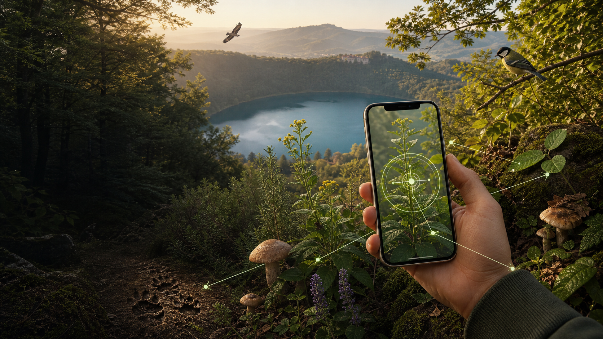

Concept e direzione Alessandro Calabrò
Il bosco risponde.
Un atlante digitale dei Castelli Romani per riconoscere piante, funghi, fauna e tracce con un'esperienza ispirata a Google Lens, ma sicura, locale e validata da esperti.
Riconoscimento locale
Uno scanner che orienta, non sostituisce l'esperto.
La demo combina caricamento foto, filtri e domande guidate. Il riconoscimento automatico vero può arrivare in fase 2; qui la resa è alta senza server e senza costi ricorrenti.
Il prototipo non autorizza raccolta o consumo. Funghi, bacche ed erbe spontanee richiedono verifica esperta.
Atlante vivo
Specie locali, rischi e usi tradizionali in una sola scheda.
Bot IA locale
Un assistente che fa scena, resta leggero e non manda dati fuori.
Il bot usa una base di risposte salvata nell'app e memorizza solo la cronologia nel browser. In demo sembra intelligente perché interpreta parole chiave, specie e bisogni reali.
Esperienza scuola e famiglie
Ogni osservazione diventa un timbro.
Il passaporto naturalistico premia osservazioni corrette: fotografare senza raccogliere, riconoscere habitat, distinguere specie simili, rispettare regole e stagioni.
Preventivo ufficiale
Proposta completa: Euro 4.900 lordi.
Realizzazione occasionale e una tantum dell'applicativo web statico “Custodi dei Castelli Romani”, ideato e curato da Alessandro Calabrò.
- UX/UI, sviluppo, atlante iniziale e scanner guidato
- Bot IA dimostrativo con memoria locale
- Pubblicazione GitHub Pages e consegna codice sorgente
- 60 giorni di garanzia correttiva